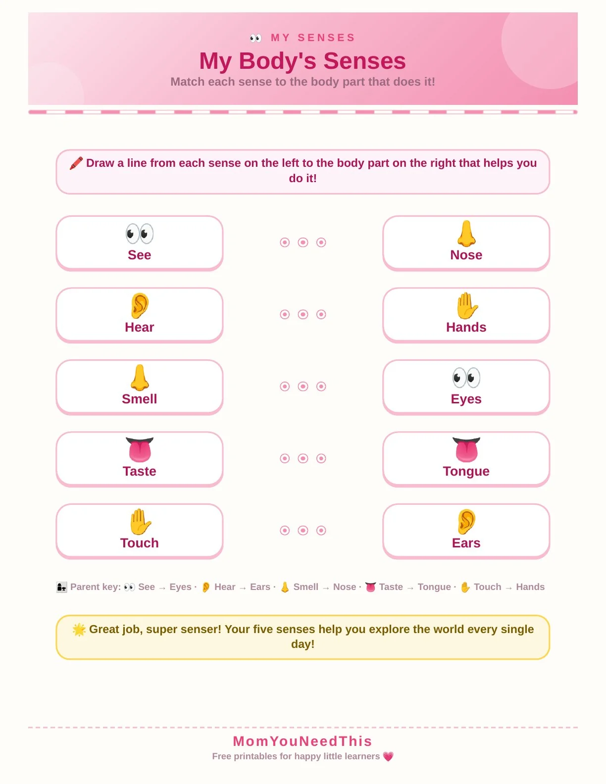

👀👂👃👅✋ The Five Senses Meet Your Amazing Senses
Quick Answer
This free printable five senses activity helps toddlers and preschoolers (ages 2–5) match each sense to its body part — eyes see, ears hear, the nose smells, the tongue tastes, and skin feels — and explore what each sense does: how eyes catch light, how the tongue sorts sweet from sour, why skin is the sense that covers the whole body. Download and print at home with no signup needed.
Your body has five superpowers — seeing, hearing, touching, tasting and smelling. These activities help little learners discover each sense and the body parts that make them work.
The five senses are a child's original science kit — five instruments they carry everywhere, already switched on. This page teaches the kit part by part, with one honest complication saved for the end: the senses help each other constantly, and the sense of touch is not in one place at all, but everywhere at once.
👀👂👃👅✋ Explore The Five Senses
Match each sense to its body part, explore what each sense does, and celebrate how our bodies help us learn.
💡 How To Use This Activity
Print one sense at a time and pair the page with the real thing: something to smell, something to taste, something rough and something smooth from around the house. Cover one sense ('close your eyes — which sense is working now?') and each page turns into a guessing game. The print button opens the full-size page in a new tab if you prefer to print from there.

🖨️ Download Your Free The Five Senses Printable
Match each sense to its body part, explore what each sense does, and celebrate how our bodies help us learn. Print it out, grab the crayons, and you're ready — no signup needed.
⬇️ Download Free Printable 🖨️ Print🎁 Free printable for toddlers & preschoolers
👀 Five Senses, Five Body Parts
Eyes — seeing. Light enters through the dark pupil, which widens in the dim and shrinks in bright sun all by itself — have your child watch their own pupils in a mirror as a light switches on. Eyes catch color, shape, movement and distance; they are the sense most children trust most, which the challenges on this page gently test.
Ears — hearing. Sound is moving air; the ear catches the wiggles and the brain names them. Ears also handle balance — a spinning child who cannot stand straight is feeling their ears' second job glitch, briefly and hilariously.
Nose — smelling. Smells are tiny pieces of things floating in the air, caught high inside the nose. Smell is the memory sense: one whiff of sunscreen can deliver a whole summer. It is also the body's smoke alarm and spoiled-milk inspector.
Tongue — tasting. The tongue's bumps hold taste buds that sort the world into sweet, salty, sour, bitter and savory. But taste cheats: it borrows heavily from smell, which is why food goes bland with a blocked nose — a fact your child can test with a pinched nose and a bite of apple.
Skin — touching. The odd one out: touch lives everywhere — pressure, texture, temperature, tickle, pain — in the body's largest organ. Skin is the first sense to develop and the one that cannot be switched off. Every other sense has an address; touch has the whole map.
❓ The Five Senses FAQs
What activities are included in The Five Senses?
This page collects our free five senses printables in one place: matching each sense to its body part (eyes, ears, nose, tongue, skin), exploring what each sense does, and celebrating how our bodies help us learn about the world. Download the printable below and start learning right away.
Are these activities really free?
Yes — every printable on MomYouNeedThis is 100% free to download and print. No signup, no payment, just tap the download button. The mirror pupil check and the pinched-nose apple test described above cost nothing and are the two demonstrations children request again. The mirror pupil check and the pinched-nose apple test described above cost nothing and are the two demonstrations children request again.
How do I use these activities with my child?
Print one sense at a time and pair the page with the real thing: something to smell, something to taste, something rough and something smooth from around the house. Cover one sense — “close your eyes: what can your ears tell you about this room?” — and the remaining senses immediately work harder, which is the discovery these pages are built around.